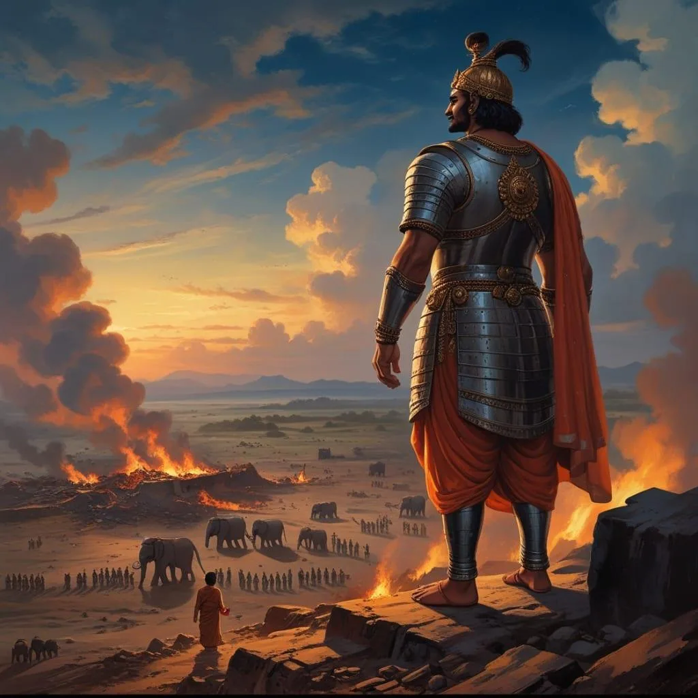
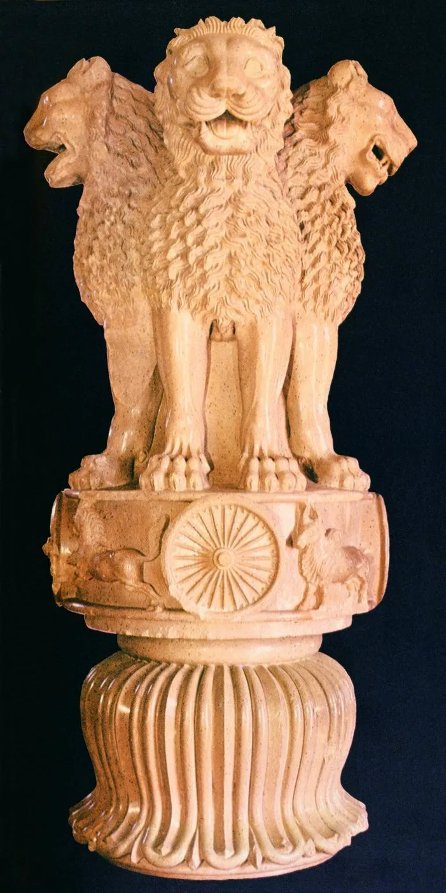

Part IV · The Ghost in the Present, 2019 to 2022 · 24 of 57
Chapter 22 · Asoka to Boo-Da
In 2001 he played Asoka, the emperor who conquered everything, saw the cost at Kalinga, and laid down his sword for the Buddha’s path. This book bends that story. Between Asoka and the Buddha sits the “boo”: the jeers after Zero, the trolling, the October the whole country watched. Boo-Da is the man on the other side of the boos, a man the noise no longer reaches. (Analysis)
Asoka to Boo-Da. (The campaign's art, agarmainkinghota.com)
Asoka renounced the sword. The man in this story did something stranger. He renounced the microphone, and kept the sword. For four years he gave almost no interviews, sat out every argument, made no statement on his son’s case, and let the films that were not yet made speak for him. Silence, the weapon his father’s generation had used against an empire, became his. (Analysis)

Asoka at Kalinga: the conqueror who laid down his sword. (Illustration: Final Thesis archive)
What does a father do with that kind of humiliation? And what does a showman do when he decides not to perform? (The author’s questions)
He waits. In 2022 he returned to the screen only in small parts in other people’s films, guest appearances in Rocketry and Brahmastra, while his own film was being finished. (Fact. Gulf News) On 2 November 2022, his 57th birthday, a teaser appeared. (Fact. Sacnilk)

The Lion Capital of Asoka. (Image: Final Thesis archive)
When he came back, he did not ask to be seen.